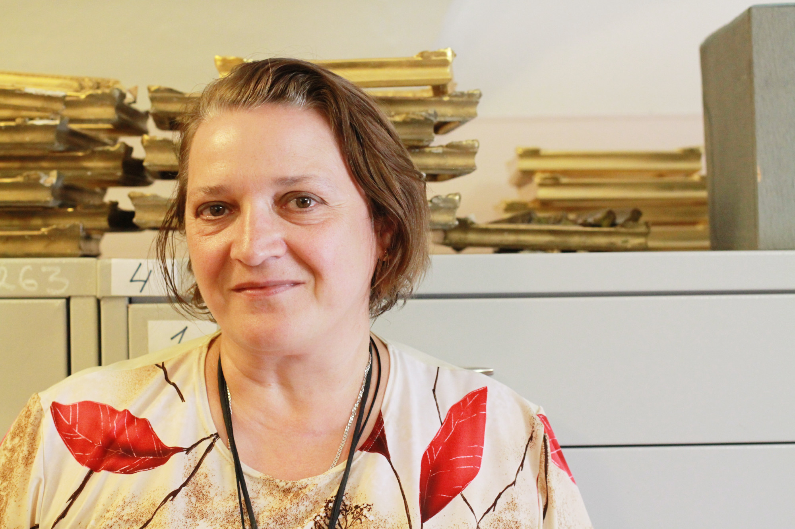
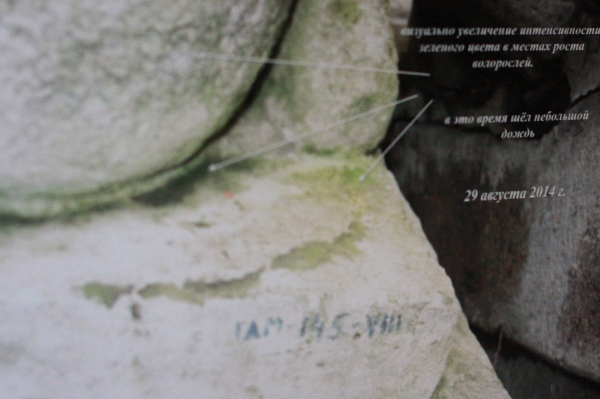

Музей еще закрыт для посетителей, а сотрудники начинают работу
Охрана выбирает нужные ключи и вместе с администратором идет открывать залы
Смотрители в музее закреплены за определенными этажами, по залам дежурят по очереди, и у многих есть свои любимые: Тронный, Парадная опочивальня, Проходная Ринальди. По оценкам экспертов, гатчинские смотрители входят в тройку наиболее доброжелательных к посетителям среди музеев Петербурга.
смотритель парадных залов
Людмила Анатольевна Горшкова
Даже если кто-то дотронулся до экспоната я не бросаюсь на человека, он ведь уже дотронулся, я тихо подхожу, здороваюсь, извиняюсь и объясняю. Я понастоящему счастлива работать здесь, каждый день открываю в этих залах чтото новое для себячитать интервью
9 00
На башне поднимают царский триколор — черно-желто-белый исторический флаг с российским гербом
Дважды в месяц на Часовой башне Большого дворца заводят часы: чтобы механизм запустился, нужно энергично раскручивать его в течение 15-20 минут, тут требуется физическая сила, для хранителя фонда оружия Ивана Иванова это уже привычная тренировка.
Дважды в месяц на Часовой башне Большого дворца заводят часы: чтобы механизм запустился, нужно энергично раскручивать его в течение 15-20 минут, тут требуется физическая сила, для хранителя фонда оружия Ивана Иванова это уже привычная тренировка.
10 00
Приходят на свои рабочие места хранители фондов
Хранитель фонда графики
Светлана Анатольевна Астаховская

в ее ведении чертежи, гравюры и акварели, в том числе автографы августейших живописцев Николая I и Александра III.Даже если кто-то дотронулся до экспоната я не бросаюсь на человека, он ведь уже дотронулся, я тихо подхожу, здороваюсь, извиняюсь и объясняю. Я понастоящему счастлива работать здесь, каждый день открываю в этих залах чтото новое для себячитать интервью
Всего в фонде не так много единиц — 1250 чертежей, 650 гравюр и порядка 520 акварелей.Но хранение — это не только разложил по папочкам и успокоился, необходимо, чтобы этим могли пользоваться другие. А это очень большая работа. Например у меня есть моя любимая девочка — нам недавно подарили, это Дагмара, будущая императрица Мария Федоровна, и чтобы составить описание, я выяснила, что есть серия таких портретов, сделанных по фотографиям.
Хранитель фонда скульптуры
Инна Петровна Беляева
Помимо кабинетной работы, она часто выходит “в поле” в парк, где регулярно оценивает состояние статуй. В ее компьютере бесчисленные фотографии фрагментов статуй и их повреждений, а в записной книжке телефоны специалистов, которые помогают ей в деле защиты экспонатов среди них и биологи, и химики, и искусствоведы.Даже если кто-то дотронулся до экспоната я не бросаюсь на человека, он ведь уже дотронулся, я тихо подхожу, здороваюсь, извиняюсь и объясняю. Я понастоящему счастлива работать здесь, каждый день открываю в этих залах чтото новое для себячитать интервью

Я храню фонд скульптуры и камня, фонд небольшой, но очень разнообразный. Разброс от античной скульптуры до фактически современной — последние закупки у нас датируются 1985 годом. Приходится знакомиться и изучать огромный объем информации, очень разноплановый. И с материалом разброс: мрамор, гипс, терракота, металл, поделочные камни. Даже мозаика есть.